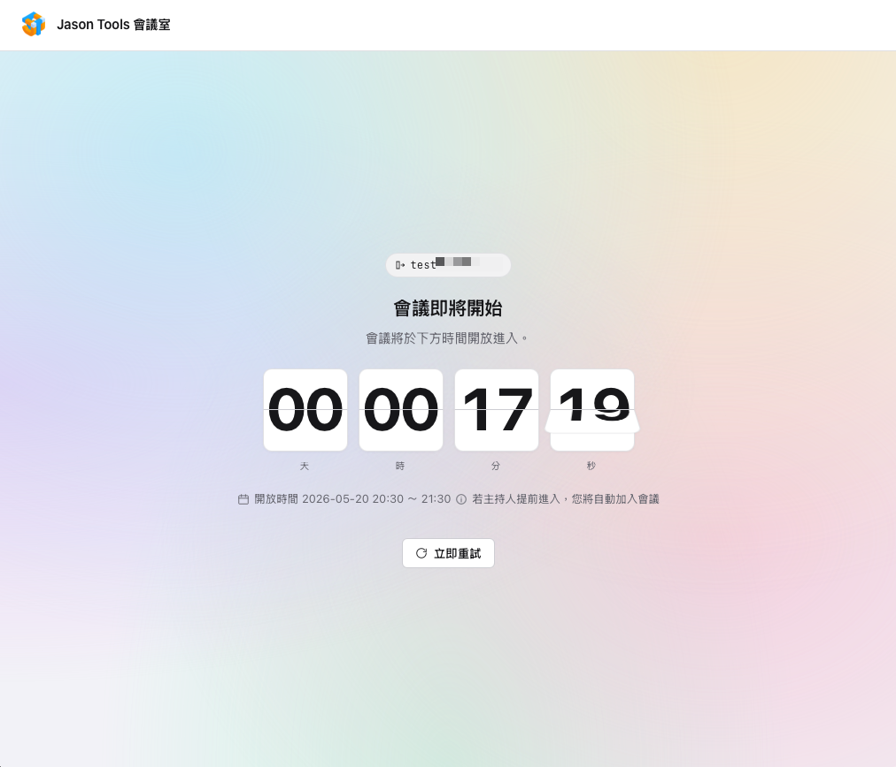
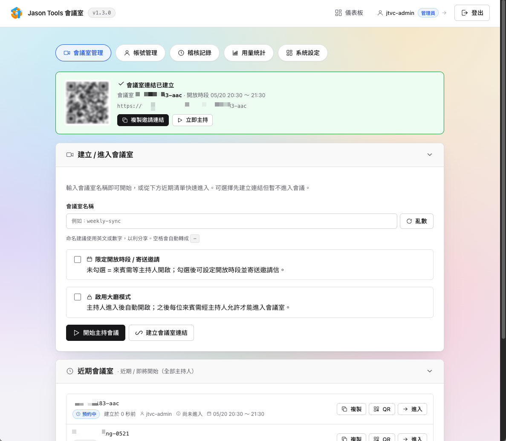
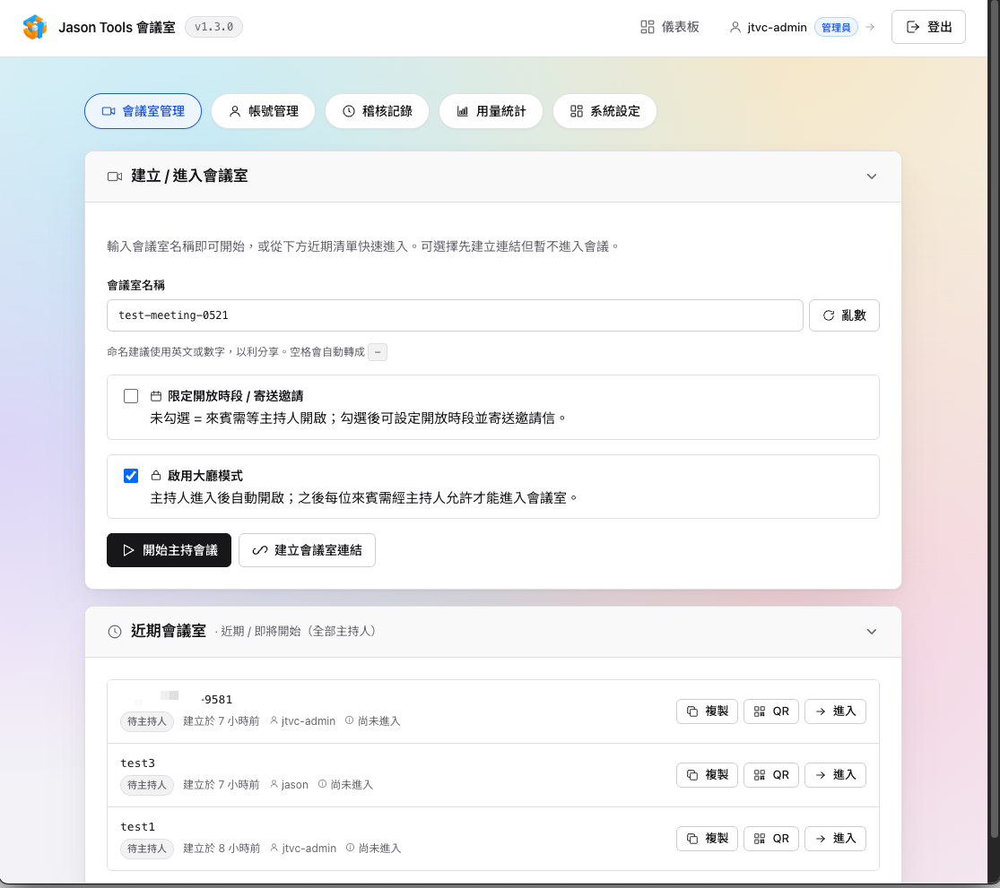
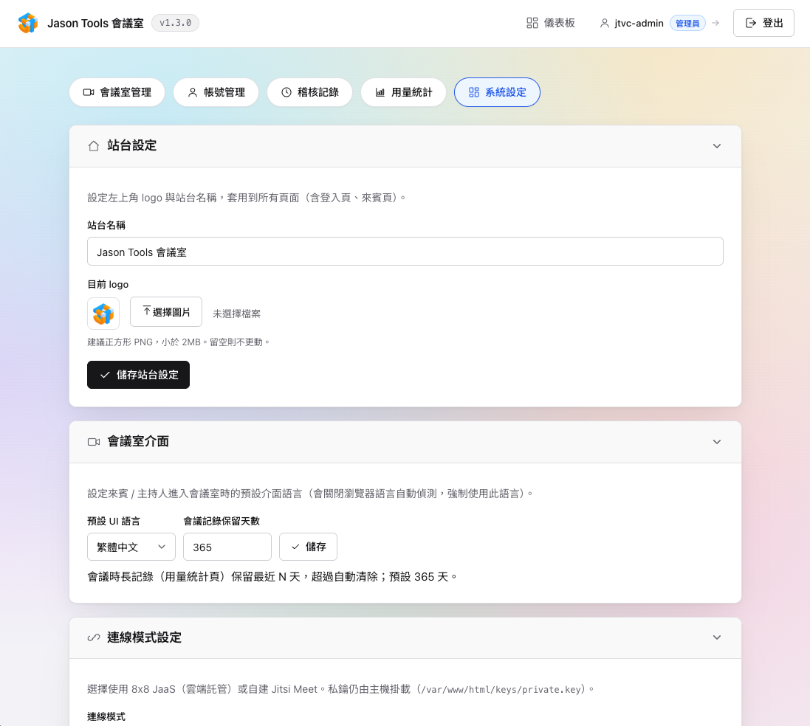

開源
自主
雙模
Jitsi Meet 認證閘道系統
搭配 Jitsi Meet 基底的會議入口系統：主持人登入後建立會議室、產生邀請連結（QR / 行事曆邀請），來賓憑連結加入。同時支援 8x8 JaaS 與自建 Jitsi Meet，內建多帳號 / 角色 / 2FA、完整稽核與排程。

搭配 Jitsi Meet 基底的會議入口系統：主持人登入後建立會議室、產生邀請連結（QR / 行事曆邀請），來賓憑連結加入。同時支援 8x8 JaaS 與自建 Jitsi Meet，內建多帳號 / 角色 / 2FA、完整稽核與排程。

把會議邀請連結到處轉貼、沒有權限與記錄，難以管理也難以稽核。
企業會議入口需要的均已內建，零外部 PHP 套件。
8x8 JaaS（RS256 + kid）或自建 Jitsi Meet（HS256 / 免 JWT），管理介面一鍵切換。
建立 / 進入、亂數命名、近期清單、一鍵複製邀請、QR Code 彈窗。
設定開放時段；未到顯示翻頁時鐘倒數，主持人提前進入即自動放行。
填與會者 email，寄送含 .ics 行事曆的邀請信，可自訂主旨 / 內文範本。
來賓需自填名稱才進場；非開放時段顯示等候 / 倒數 / 已結束頁。
admin 看全部、host 只看自己建的；支援 TOTP 兩步驟驗證。
登入、建室、邀請、設定變更全記錄，可即時外拋 syslog / CEF / GELF。
22 種主題、可換站台名稱與 logo、會議室預設介面語言。
JaaS 模式接 USAGE webhook，依訂閱週期統計 MAU、可手動校正。
從設計到部署逐項把關。
（截圖陸續補上）

登入後的主控台：一鍵建立 / 進入會議室、檢視近期會議室清單與本期用量，所有操作全程稽核。

設定預約開放時段、填入與會者 Email、可亂數產生房名，建立後立即取得邀請連結。

每個會議室都能彈出 QR Code，手機掃描即可加入，也能一鍵複製連結或寄送邀請信。

未到開放時段時，來賓看到翻頁時鐘倒數；主持人提前進入會自動放行，無需苦等。

登入、建室、邀請、設定變更等行為全數記錄，可依日期範圍篩選並分頁瀏覽，支援 SIEM 外拋。

集中管理連線模式（JaaS / 自建）、SMTP 寄信、Log 外拋、站台名稱與 Logo、外觀主題。

多帳號與角色（admin / host）、TOTP 兩步驟驗證，顯示名稱與 Email 皆可編輯。

內建 22 種主題，從乾淨純白到深色科技風，一鍵切換並套用到所有頁面（含來賓頁）。
兩種安裝方式，資料與設定皆持久化、更新不遺失。
| 項目 | 最低 | 建議 |
|---|---|---|
| PHP | 8.2 | 8.4 |
| Web 伺服器 | Apache + mod_rewrite（AllowOverride All） | 同左 + HTTPS |
| PHP 擴充 | openssl、fileinfo、json、mbstring | 同左 |
| 其他 | 可寫入資料目錄；JaaS 模式需 8x8 私鑰 | Docker 24+ |
# 取得程式並啟用 .htaccess git clone https://github.com/jasoncheng7115/jt-vc-portal.git cd jt-vc-portal a2enmod rewrite headers cp dot.htaccess .htaccess # 持久化資料目錄（預設 /var/jaas-data，可於 config.php 調整） sudo mkdir -p /var/jaas-data && sudo chown www-data:www-data /var/jaas-data # JaaS 模式才需要：放入 8x8 私鑰 sudo mkdir -p keys && sudo cp /path/to/private.key keys/private.key
git clone https://github.com/jasoncheng7115/jt-vc-portal.git
cd jt-vc-portal
docker build --pull -t jt-vc-portal .
mkdir -p /opt/jt-vc-portal/keys /opt/jt-vc-portal/data
chown 33:33 /opt/jt-vc-portal/data
cp /path/to/private.key /opt/jt-vc-portal/keys/private.key # JaaS 模式
docker run -d --restart unless-stopped -p 58189:58189 \
-e JTVC_ADMIN_EMAIL="admin@example.com" \
-e JTVC_ADMIN_PASSWORD="請設定強密碼" \
-v /opt/jt-vc-portal/keys/:/var/www/html/keys \
-v /opt/jt-vc-portal/data/:/var/jaas-data \
--name jt-vc-portal jt-vc-portal
# 不想自己 build，直接下載 Release 打包映像（linux/amd64） curl -LO https://github.com/jasoncheng7115/jt-vc-portal/releases/download/v1.2.0/jt-vc-portal-1.2.0-docker-amd64.tar.gz sha256sum -c jt-vc-portal-1.2.0-docker-amd64.tar.gz.sha256 # 驗證完整性 docker load < jt-vc-portal-1.2.0-docker-amd64.tar.gz # 載入為 jt-vc-portal:latest mkdir -p /opt/jt-vc-portal/keys /opt/jt-vc-portal/data chown 33:33 /opt/jt-vc-portal/data cp /path/to/private.key /opt/jt-vc-portal/keys/private.key # JaaS 模式才需要 docker run -d --restart unless-stopped -p 58189:58189 \ -e JTVC_ADMIN_EMAIL="admin@example.com" \ -e JTVC_ADMIN_PASSWORD="請設定強密碼" \ -v /opt/jt-vc-portal/keys/:/var/www/html/keys \ -v /opt/jt-vc-portal/data/:/var/jaas-data \ --name jt-vc-portal jt-vc-portal:latest
系統對外為 :58189，正式環境建議前面再以 nginx 或 Apache 反向代理掛上 HTTPS。
# nginx 範例 server { listen 443 ssl; server_name your-domain.com; # ssl_certificate /etc/letsencrypt/live/your-domain.com/fullchain.pem; # ssl_certificate_key /etc/letsencrypt/live/your-domain.com/privkey.pem; location / { proxy_pass http://127.0.0.1:58189/; proxy_set_header Host $host; proxy_set_header X-Real-IP $remote_addr; proxy_set_header X-Forwarded-For $proxy_add_x_forwarded_for; proxy_set_header X-Forwarded-Proto $scheme; } }
X-Real-IP 取得真實來源 IP（fail2ban 鎖定與稽核用），請務必讓反向代理帶上此 header。完整 Apache 站台設定範例與「更新 / 升級」說明請見 GitHub README。